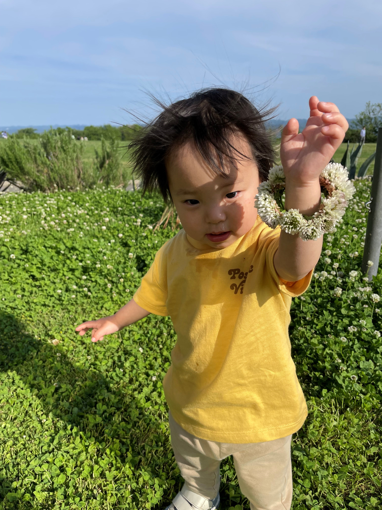

自己紹介

私とかわいい息子たち
- 名前：小澤 朋恵
- 東京生まれの東京育ち(府中市)、東京から出たことのない自称・生粋のシティーウーマン
- 家族：長男（夫）、次男（柴犬５歳）、三男（１歳７カ月）、恐らく四男（お腹の中）
- 趣味：子供たちと遊ぶ、旅行、どっぷりＫＰＯＰ

現在最推しのアイドル・SEVENTEEN 4月23日に発売した新曲「Super」
MY ネスレ人生
- 2018年1月ネスレに中途入社 ECD FSS配属 ネスカフェアンバサダーの営業
- 2018年10月 ECD FSS SP(セールスプランニング)へ異動
- 2019年4月 ECD MVP（マチエコ） SPへ異動
- 2021年8月から産休に入り、2023年4月17日より復職
ネスレ入社前
- 社員の半分がインド人の小さな旅行会社で海外旅行の添乗・営業・手配諸々。約10か国渡航。
- 旭化成でヘーベルハウスのリフォーム営業。当時のあだ名はオフィスの住人。

ブータン王国へ添乗したとき出会ったブータンの有名人
楽しかったゴールデンウィーク
- 息子と過ごす時間を満喫しました
- 唯一遠出したマザー牧場

